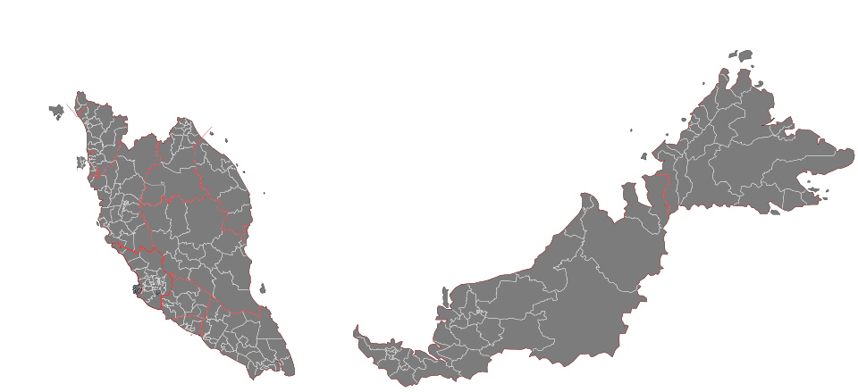
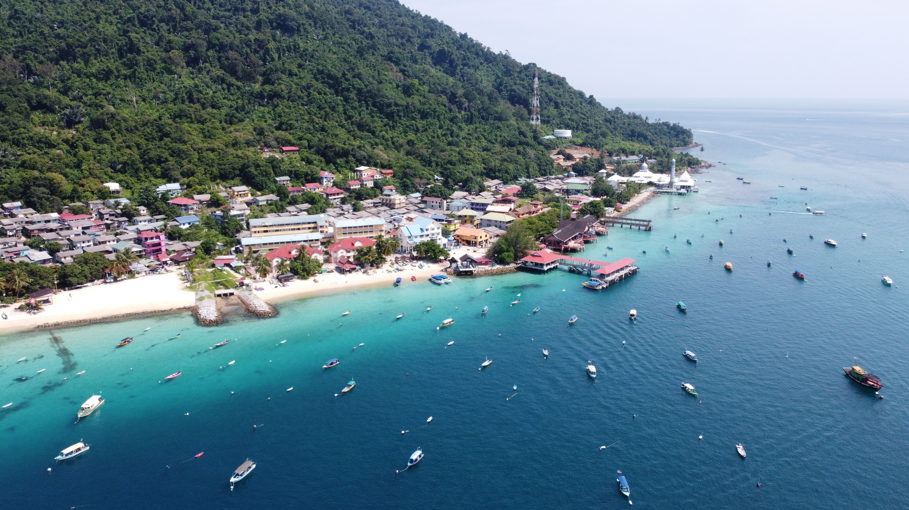
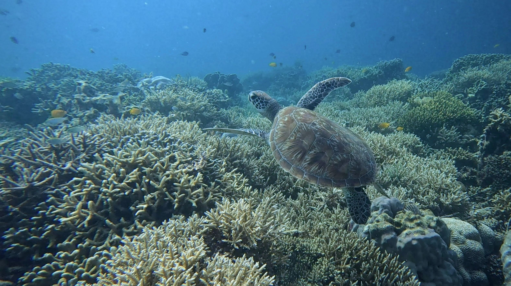
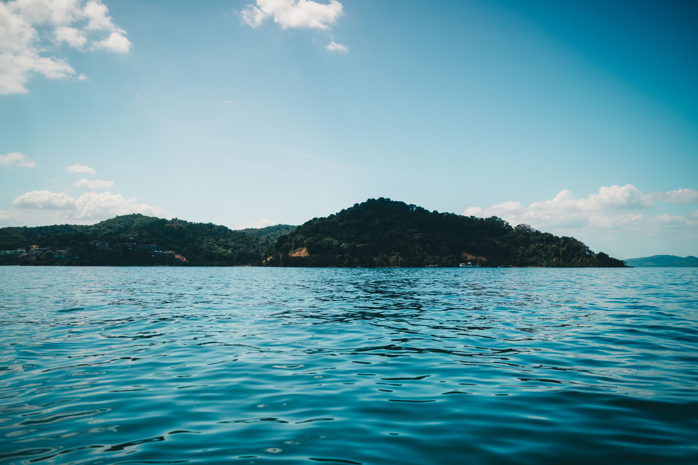
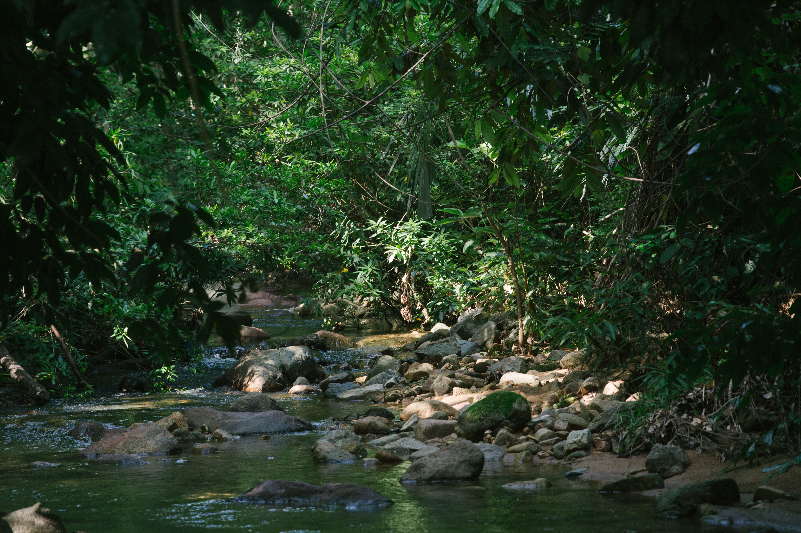
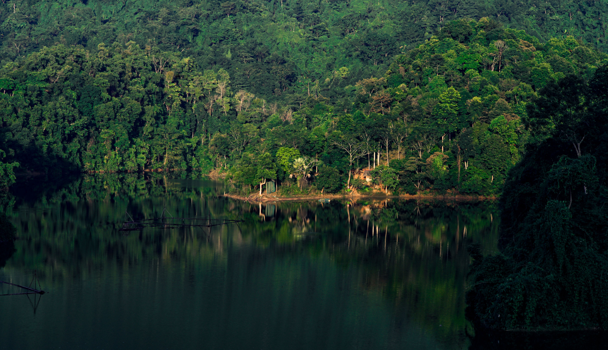
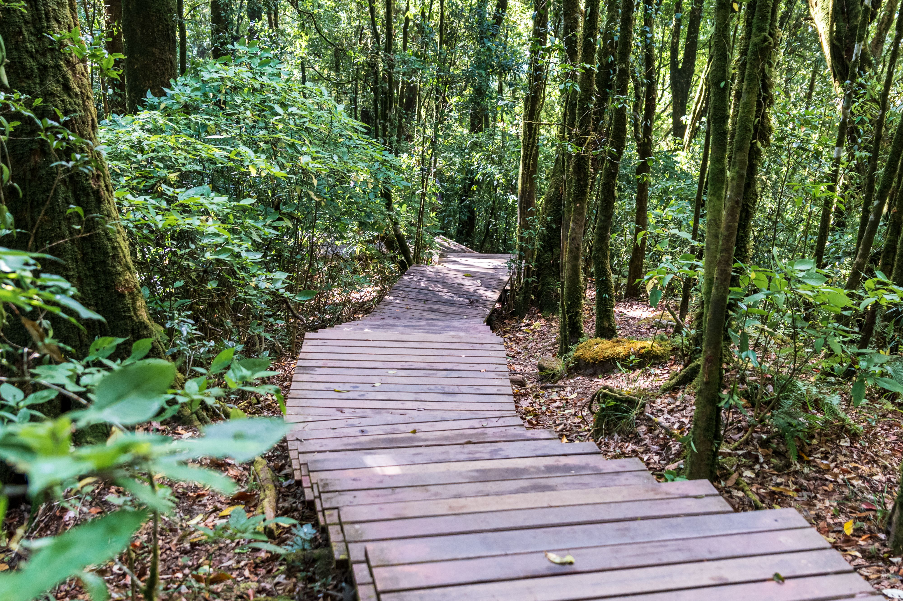

Protecting Malaysia's oceans, forests, and biodiversity.
Malaysia is one of the world's most biodiverse countries, containing rich marine ecosystems, ancient rainforests, and thousands of unique species.
However, these ecosystems face challenges such as pollution, habitat loss, climate change, and wildlife threats.
Conservation efforts are important to protect nature for future generations.

Click a marker to discover Malaysia's protected natural areas.

Location:
Terengganu, Malaysia
Importance:
Protects coral reefs, marine habitats,
and sea turtle populations.
Threats:
• Coral damage
• Plastic pollution
• Climate change

Location:
Sabah, Malaysia
Importance:
One of Malaysia's largest marine protected areas,
supporting coral reefs, fisheries, and marine biodiversity.
Threats:
• Overfishing
• Ocean pollution
• Habitat damage

Location:
Sabah, Malaysia
Importance:
Protects coral reefs, marine ecosystems,
and coastal biodiversity near Kota Kinabalu.
Threats:
• Tourism pressure
• Plastic pollution
• Coral damage

Location:
Pahang, Kelantan and Terengganu
Importance:
One of the world's oldest rainforests,
home to many wildlife species.
Threats:
• Habitat destruction
• Human activities

Location:
Perak, Malaysia
Importance:
One of Malaysia's largest continuous rainforest areas,
home to elephants, tigers, and many rare species.
Threats:
• Habitat loss
• Illegal hunting
• Human activities
Protection:
• Forest conservation programs
• Wildlife protection efforts

Location:
Sabah, Malaysia
Importance:
A UNESCO World Heritage Site known for
unique plants, wildlife, and Mount Kinabalu.
Threats:
• Climate change
• Habitat disturbance
• Human impact
Protection:
• Protected area management
• Biodiversity conservation